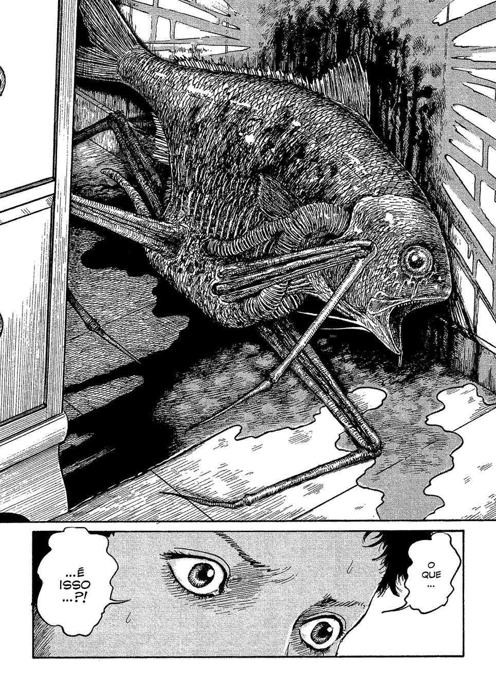
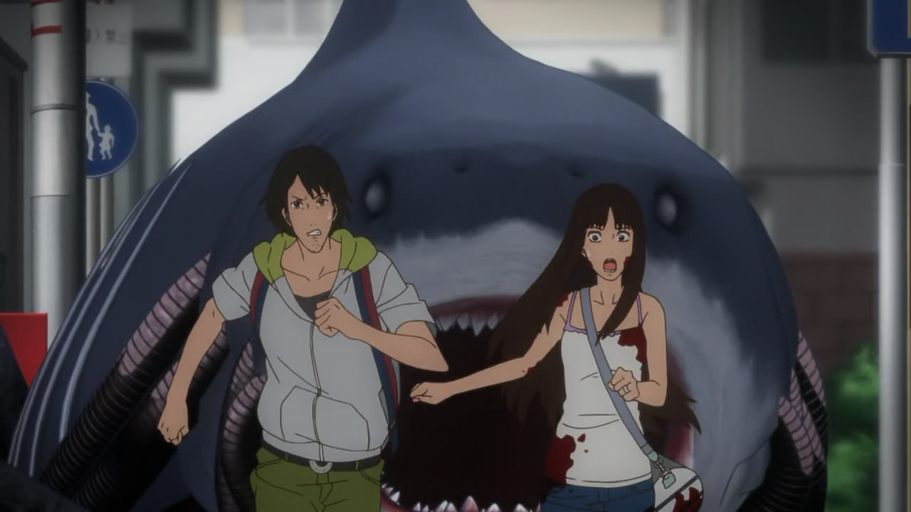

Gyo
Gyo é uma obra de Junji Ito publicada em 2001, e é uma das suas histórias mais viscerais e estranhas. A história acompanha Tadashi e sua namorada Kaori, que estão passando férias em Okinawa quando começam a perceber um cheiro insuportável de podridão vindo do mar. Logo, eles descobrem o motivo: peixes mortos — mas vivos e andando em terra firme, graças a patas mecânicas que parecem ter sido enxertadas em seus corpos.
Essas criaturas não são apenas grotescas, mas também extremamente contagiosas. O "fedor da morte" é transmitido como uma infecção biológica e mecânica, espalhando-se rapidamente pela ilha e, posteriormente, pelo Japão inteiro.
Enquanto a situação piora, Kaori se torna cada vez mais sensível ao cheiro, mergulhando em um estado de ansiedade, pânico e paranoia extrema. Tadashi luta para protegê-la enquanto o mundo ao seu redor literalmente apodrece — e o terror só cresce conforme os próprios humanos começam a ser dominados por essas engenhocas macabras.
Análise Psicológica: Gyo e a Ansiedade Existencial
Gyo é uma metáfora visceral e perturbadora para a degradação inevitável da vida e o medo do próprio corpo se tornar repulsivo e alienígena. Vamos analisar alguns pontos principais: O Medo da Contaminação: Kaori desenvolve uma espécie de "hipersensibilidade olfativa", onde ela sente o cheiro da morte antes de qualquer um. Isso pode ser visto como uma manifestação extrema de ansiedade de contaminação, semelhante ao que ocorre em transtornos obsessivo-compulsivos (TOC) ou no transtorno de ansiedade generalizada (TAG). Corpo como Máquina Apodrecida: Em Gyo, o corpo humano é reduzido a um objeto mecânico sem controle. Essa perda de autonomia remete a medos muito humanos: o envelhecimento, a doença, o câncer, a decomposição — todas formas naturais, porém apavorantes, de deterioração do corpo. A Natureza como Inimiga: Ao contrário de muitas histórias em que a natureza é neutra ou benevolente, em Gyo o oceano — símbolo da vida e da origem — se torna o portador da morte. É como se a própria natureza estivesse se revoltando contra os humanos, talvez como uma crítica ambiental implícita. Ansiedade Existencial: No fundo, Gyo explora um terror ainda mais profundo: a impossibilidade de escapar da decadência. Não importa o que Tadashi faça, o colapso é inevitável — um eco do medo existencial de que a morte e a corrupção são destinos que ninguém pode evitar.
Referências ao mundo real
Em psicologia, o conceito de "nojo" (disgust) é estudado como um mecanismo de proteção biológica — sentimos nojo para evitar doenças. Gyo explora essa reação ao extremo, tornando o "nojo" em terror absoluto. Algumas leituras associam Gyo a críticas sobre armamentismo biológico ou desastres ambientais modernos, como o envenenamento dos oceanos por poluição, indicando que o próprio comportamento humano cria aberrações fatais.